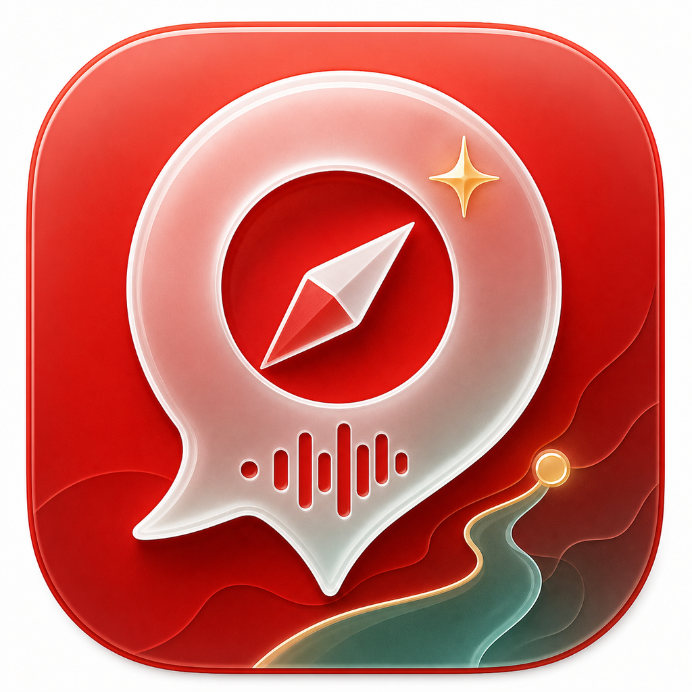
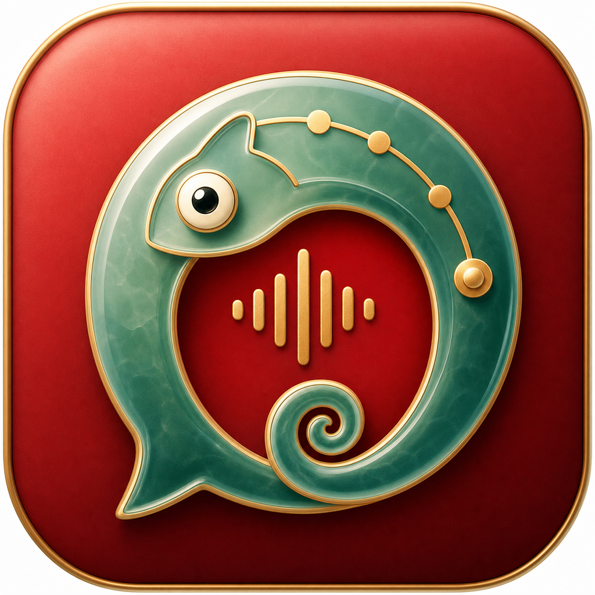
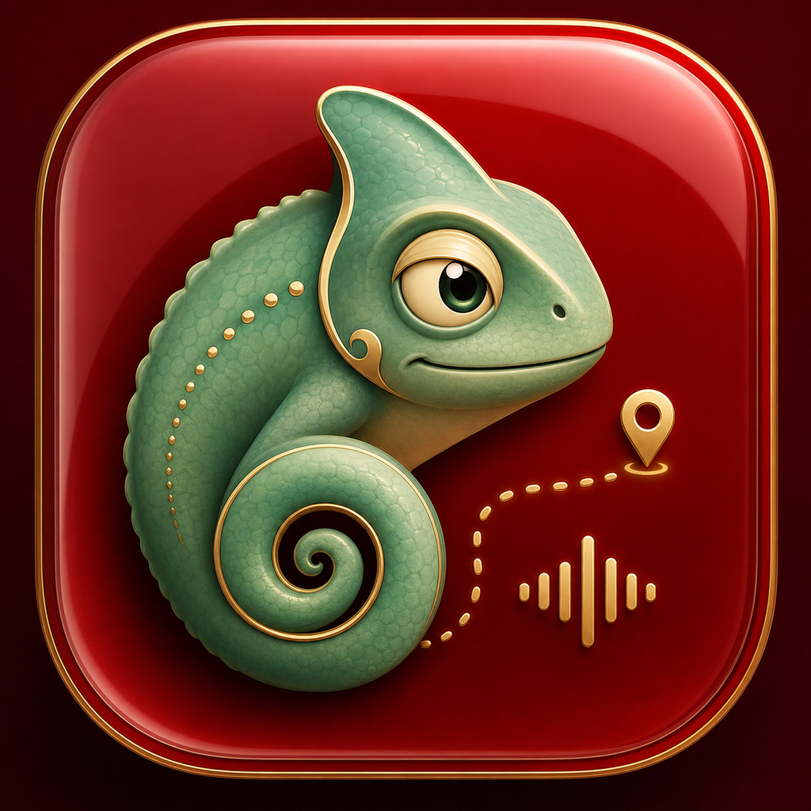
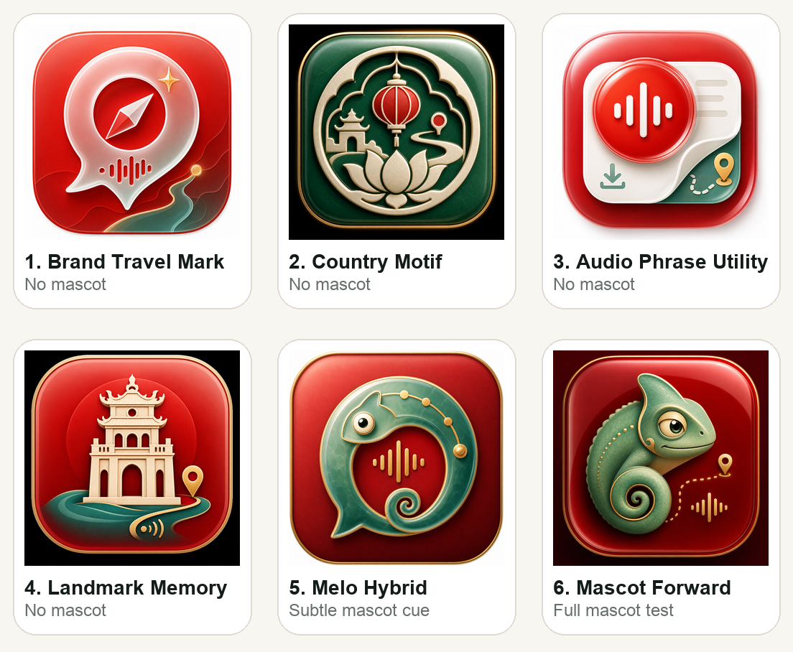
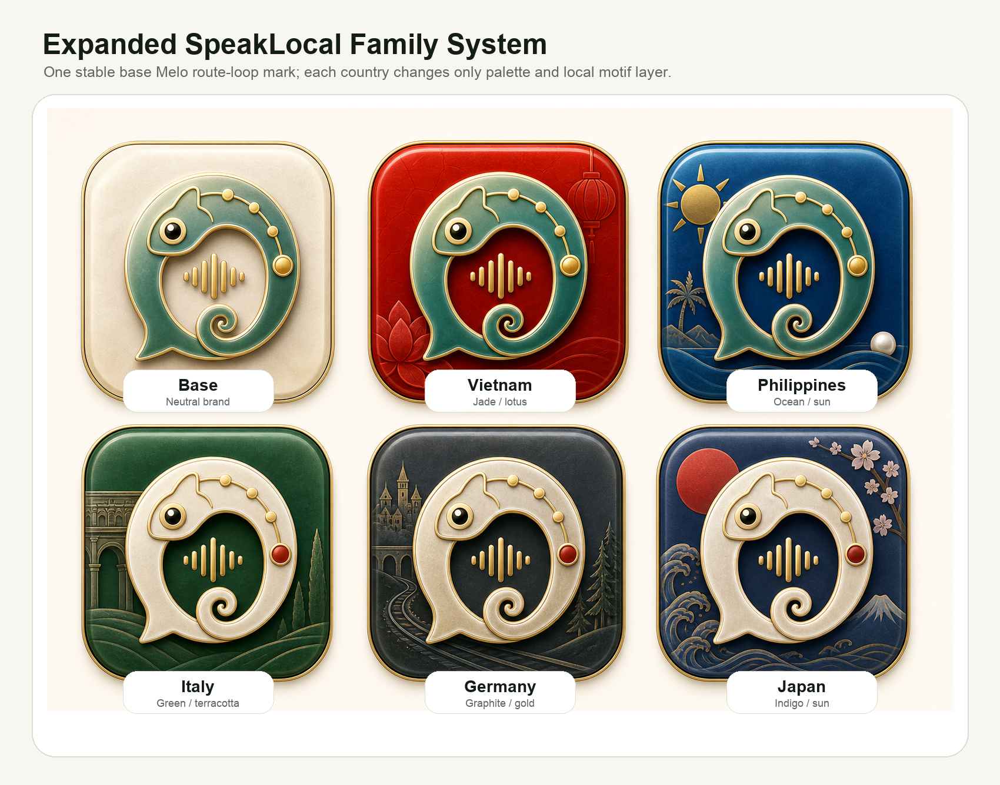
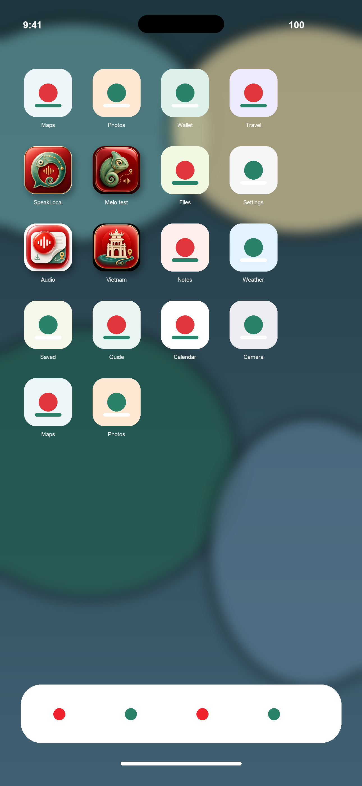
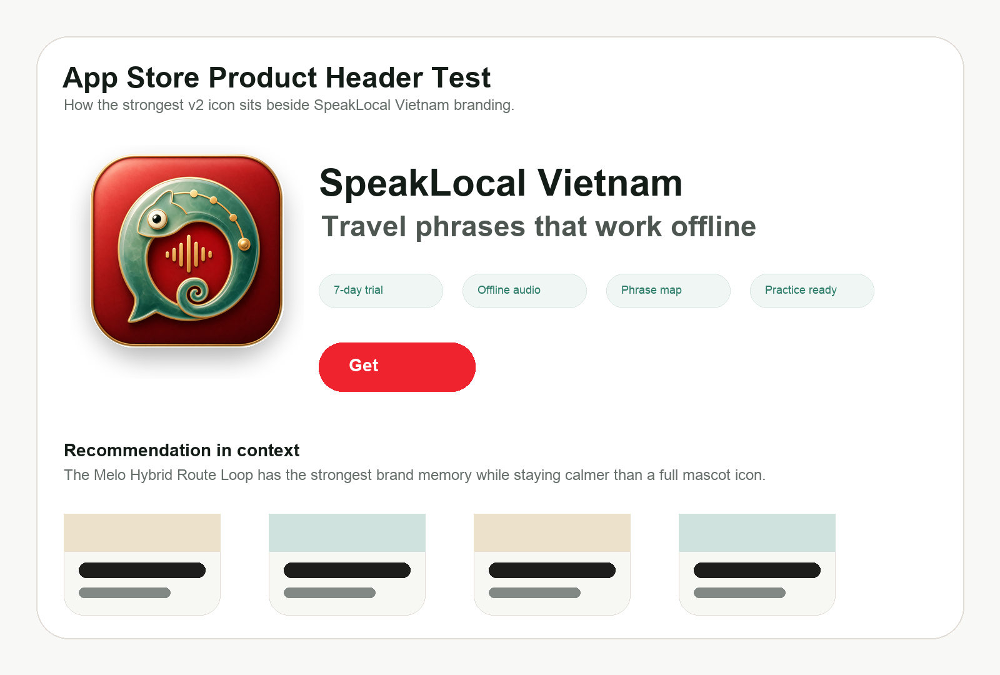
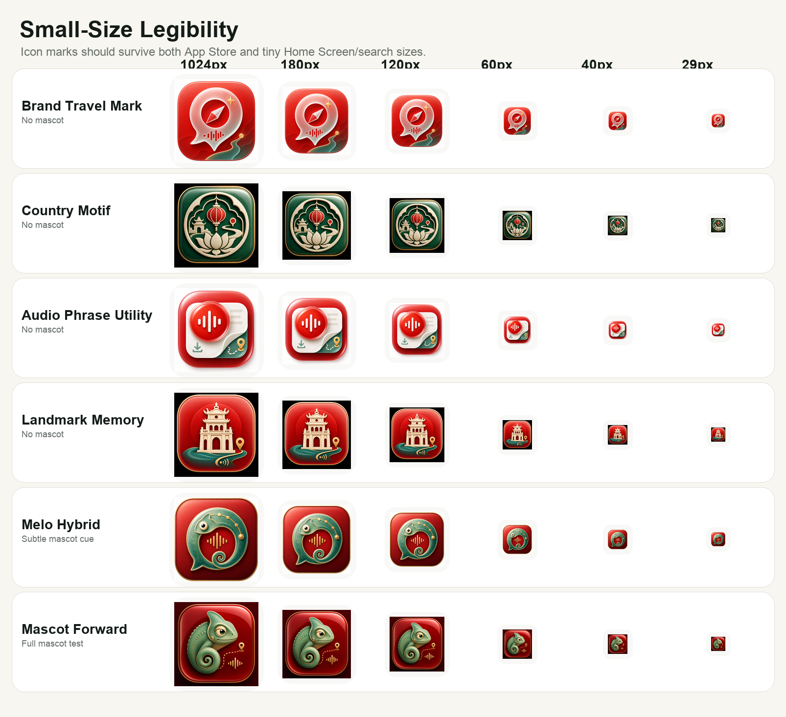

App Icon Family
V2 high-fidelity icon concepts for SpeakLocal Vietnam and the future country-app family. The recommended direction uses a stable Melo route-loop mark that can change country layers without becoming a flag sticker.
Lead: Melo Hybrid








Implementation Notes
- Recommended launch candidate: Direction 5, Melo Hybrid Route Loop.
- Keep Direction 1 as the no-mascot fallback for App Store testing.
- Do not ship Direction 6 without testing; it risks mascot-first positioning.
- Future country apps should inherit the base mark and swap only palette, route dot, and local motif layer.